PDF page 1
Capability Acceleration, Civilizational Viability, and Power Architecture
CAPABILITY ACCELERATION,
CIVILIZATIONAL VIABILITY, AND POWER ARCHITECTURE
A Three-Axis Model for AI-Driven Civilizational Transition
Raynor Eissens
Ambient Future Labs
Comparative framework and position paper
Version 1.0 | 31 August 2026
Reserved DOI: 10.5281/zenodo.22215393
"History defines the trajectory of power. Thermodynamics defines the boundary of viability."
- The Two Lines of Reality, Ambient Era Canon (2026)
DOI 10.5281/zenodo.22215393 | 1
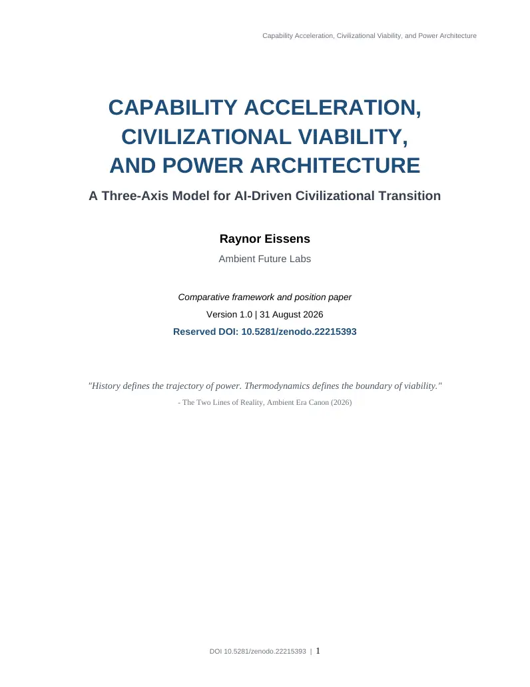
PDF page 2
Capability Acceleration, Civilizational Viability, and Power Architecture
Abstract
This paper compares two independent frameworks for AI-driven civilizational transition: Leopold Aschenbrenner's Situational Awareness (2024) and Raynor Eissens' Ambient Era Canon (2026). Situational Awareness models a rapid capability trajectory in which scaling, automated AI research, scientific acceleration, robotics, economic output, and military advantage form a widening chain of positive feedback. The Ambient Era Canon instead centers the conditions under which human and institutional systems remain viable as intelligence becomes infrastructural: reversible stress, attention preservation, autonomy, environmental carrying capacity, civilizational coordination, and closure as the disappearance of unresolved structural pressure. An initial two-axis comparison - capability acceleration versus civilizational viability - is useful but incomplete. Re-examination of the Ambient corpus reveals an explicit power and geopolitical layer: the historical sequence from monetary power to platform power to environmental power, the treatment of attention as a geopolitical resource, and Ambient Power as a low-pressure alternative to coercive or extractive power. This motivates a third analytical axis: Power Architecture. The resulting model distinguishes three questions that are often collapsed into one: how fast intelligence scales, whether civilization can absorb that scaling without accumulating destructive pressure, and what form of power becomes dominant as intelligence diffuses through infrastructure. The framework does not claim that either source corpus is empirically established as a complete theory. It is offered as a comparative research architecture that separates capability, viability, and power, identifies points of conflict and compatibility, and proposes operational hypotheses for future work.
Keywords: artificial intelligence; AGI; superintelligence; capability acceleration; civilizational viability; power architecture; ambient power; attention infrastructure; geopolitics; automated AI research; structural pressure; human autonomy.
Scope note. The paper distinguishes source reconstruction from synthesis. Claims attributed to Aschenbrenner or the Ambient Era Canon are treated as claims internal to those works unless independently supported. The three-axis model introduced here is a new comparative synthesis, not a claim made by Aschenbrenner.
1. The comparison problem
The contemporary AI debate often compresses several different questions into a single variable called progress. Model capability, scientific productivity, economic output, military advantage, social stability, human autonomy, and institutional legitimacy are discussed as though they must rise or fall together. They need not. A civilization can become more capable while becoming less governable. It can become economically productive while increasing cognitive pressure. It can also, at least in principle, run increasingly powerful machine systems while reducing the amount of friction experienced by ordinary people.
This paper begins from the observation that Situational Awareness and the Ambient Era Canon are useful precisely because they emphasize different variables. Aschenbrenner asks how capability may accelerate and broaden once AI research itself becomes automatable. The Ambient corpus asks what conditions allow increasingly complex socio-technical systems to remain reversible, coherent, and livable. The first is primarily a trajectory model. The second is primarily a viability architecture.
The comparison becomes more interesting when power is added. Situational Awareness links advanced AI to strategic advantage and potentially decisive military and economic concentration. The Ambient corpus contains a different theory of power: power as the capacity of environments and infrastructures to carry coherence with less coercive maintenance. The question is therefore not only whether AI becomes powerful, but what "power" means after intelligence becomes abundant.
2. Axis A: Capability Acceleration in Situational Awareness
Situational Awareness is a staged acceleration model. Its central chain begins with observed scaling trends in compute, algorithmic efficiency, and the removal of practical constraints on model use. Aschenbrenner argues that
DOI 10.5281/zenodo.22215393 | 2
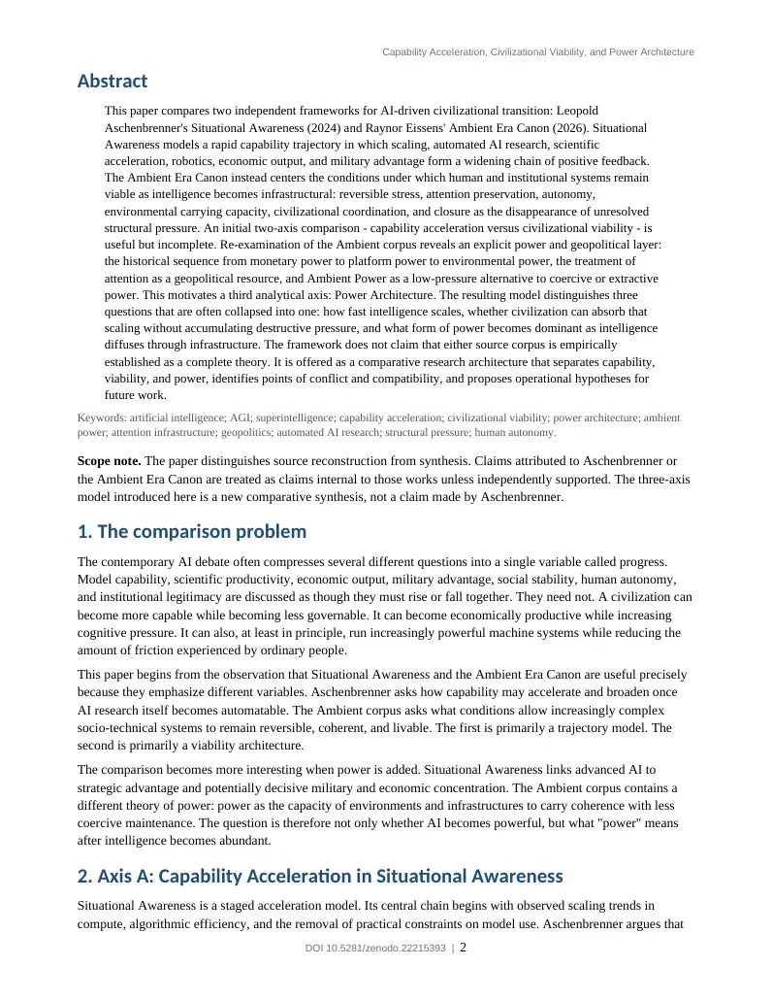
PDF page 3
Capability Acceleration, Civilizational Viability, and Power Architecture
another large qualitative jump from GPT-4-era systems could plausibly produce AI systems capable of doing the work of AI researchers and engineers around the latter part of the 2020s (Aschenbrenner, 2024).
The decisive transition is not merely human-level task performance. It is the automation of the process that improves AI. If large fleets of AI researchers can perform machine-learning research in parallel and at high serial speed, AI R&D becomes a positive feedback loop. Aschenbrenner therefore models a possible intelligence explosion in which algorithmic progress compresses years of human research into much shorter intervals. The same accelerated cognitive labor can then be applied to other domains.
AI capability enables automated AI research. Automated AI research feeds back into faster algorithmic progress. Accelerated research broadens into science and technology. Scientific progress removes bottlenecks in robotics and physical automation. Automation expands economic output and strategic capacity. Advanced systems may create a decisive military and geopolitical edge.
The well-known broadening figure in Situational Awareness makes this logic visually explicit: explosive growth begins in the narrow domain of AI R&D and then spreads to cognitive labor, science and technology, robotics, military advantage, and GDP. The figure is analytically useful because it shows the intended causal direction. It is also incomplete as a civilizational model because variables such as autonomy, meaning, social cohesion, institutional absorptive capacity, attention, and structural pressure are not part of the plotted system.
3. Axis B: Civilizational Viability in the Ambient Era Canon
The Ambient Era Canon starts from a different unit of analysis. Its recurring question is not "how much intelligence exists?" but "what conditions allow a system to carry intelligence without exporting unsustainable pressure to humans and institutions?" Core constructs include reversible stress (Delta R), relational fields, environmental carrying capacity, attention as infrastructure, the Raynor Stack, institutional softening, and RFL-Omega civilizational closure.
RFL-Omega defines closure as the condition in which personal, relational, domestic, civic, and institutional layers become sufficiently aligned that civilizational coordination no longer continuously generates fragmentation, coercive coordination, or unresolved structural pressure. Importantly, the source text explicitly states that closure is not a static equilibrium. It is a stable regime in which life can continue without being structurally burdened by the systems that support it (Eissens, 2026d).
This distinction matters. Closure should not be equated with a halt in invention. A stable organism remains metabolically active; a stable protocol can support enormous traffic; a resilient institution can change without accumulating irreversible damage. In the Ambient vocabulary, the target variable is not low activity but low unresolved pressure. This permits a theoretically important possibility: maximum machine velocity with minimum human friction.
The Raynor Stack expresses the civilizational sequence as time -> attention -> AI -> warmth -> ambience -> aura -> field. Within this architecture, intelligence is not treated as the terminal value. The final variable is the capacity of the environment to carry coherence so that less active cognitive management is required. In this sense the Ambient model is not anti-capability. It is anti-equivalence between capability and viability.
DOI 10.5281/zenodo.22215393 | 3
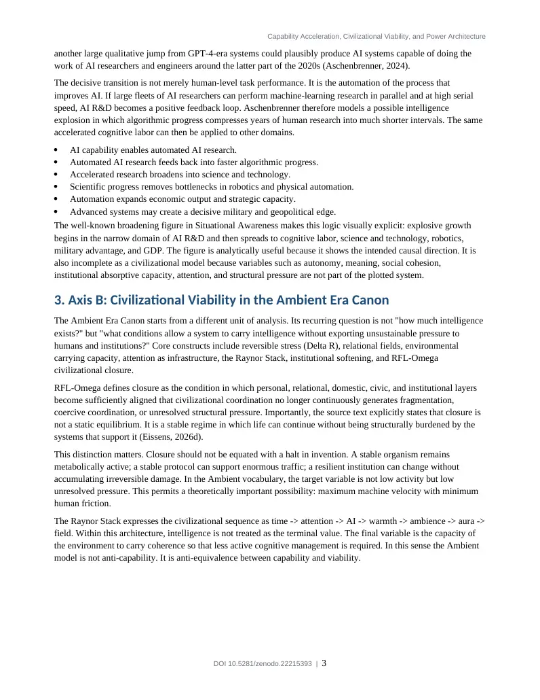
PDF page 4
Capability Acceleration, Civilizational Viability, and Power Architecture
Figure 1. The proposed three-axis model. The framework separates the rate of capability growth, the viability of the civilization carrying that growth, and the architecture through which power scales.
4. The missing third axis: Power Architecture
A two-axis comparison between capability acceleration and civilizational viability is incomplete because both corpora also contain theories of power. The difference is that they operate at different levels of geopolitical analysis.
Situational Awareness is actor-centered. Its salient actors are frontier AI laboratories, states, strategic competitors, industrial systems, and military establishments. Power grows from scarce capabilities: compute, algorithms, energy, security, talent, and the ability to convert superior intelligence into a lead that competitors cannot quickly match.
The Ambient corpus is regime-centered. It asks how the form of power changes as civilizational coordination moves from monetary institutions to computational platforms and then, potentially, to environmental or ambient infrastructures. The Two Lines of Reality explicitly places Bretton Woods, platform power, and Ambient Civilization on a historical line of power regimes. It argues that power moves progressively deeper into the background: from money and institutions, to computational infrastructure, to the conditions that shape cognition and coordination themselves (Eissens, 2026c).
This is geopolitics, but not conventional event geopolitics. It is a theory of what counts as a strategic substrate. Attention as Infrastructure makes the claim explicit: oil shaped empires, data shaped platforms, and attention becomes a civilizational resource once technological systems can consume or preserve cognitive coherence. The relevant question shifts from "who owns the resource?" to "which architectures can preserve the resource without burning it?" (Eissens, 2026b).
4.1 Ambient Power as a competing scaling logic
Ambient Power defines a contrast between high-pressure and low-pressure power. High-pressure systems scale through concentration, prediction, enforcement, extraction, trajectory binding, and continuous maintenance. Ambient systems are claimed to scale through reversibility, open boundaries, pressure absorption, and environmental support. The internal thesis is that a power architecture with lower maintenance costs can outlast a power architecture that requires continuous coercive energy injection (Eissens, 2026a).
DOI 10.5281/zenodo.22215393 | 4
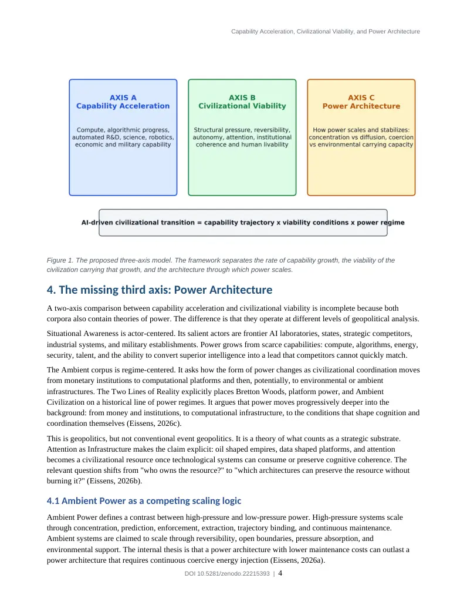
PDF page 5
Capability Acceleration, Civilizational Viability, and Power Architecture
Whether this proposed law is empirically correct is an open question. What matters for comparison is that it supplies a power theory missing from the initial two-axis reading. The contrast with Aschenbrenner is therefore sharper than "technology versus wellbeing." Both models are concerned with power after advanced AI, but they define scalable power differently.
Figure 2. Two power logics. Situational Awareness emphasizes strategic edge through capability concentration. Ambient Power emphasizes stability through distributed carrying conditions. These are analytical ideal types, not mutually exclusive descriptions of every institution.
5. Actor geopolitics and regime geopolitics
The distinction between actor geopolitics and regime geopolitics resolves an apparent contradiction in earlier comparisons. The Ambient corpus does not provide the same level of concrete statecraft analysis as Situational Awareness. It does not map semiconductor export controls, alliance behavior, Chinese industrial capacity, espionage, or military procurement in comparable detail. It would therefore be inaccurate to present it as a rival forecast of US-China competition.
However, it is equally inaccurate to say that geopolitics is absent. The Ambient corpus contains an explicit Geopolitics & Stability Layer, treats attention as a strategic resource, contrasts surveillance states with platform economies, and places historical monetary and computational power inside a longer transition of power regimes. Its geopolitical object is the architecture through which power is reproduced.
Dimension Situational Awareness Ambient Era Canon
Primary unit State, lab, industrial bloc Civilizational regime, infrastructure, field
Strategic resource Compute, energy, models, algorithms, security
Attention, reversibility, environmental carrying capacity
DOI 10.5281/zenodo.22215393 | 5
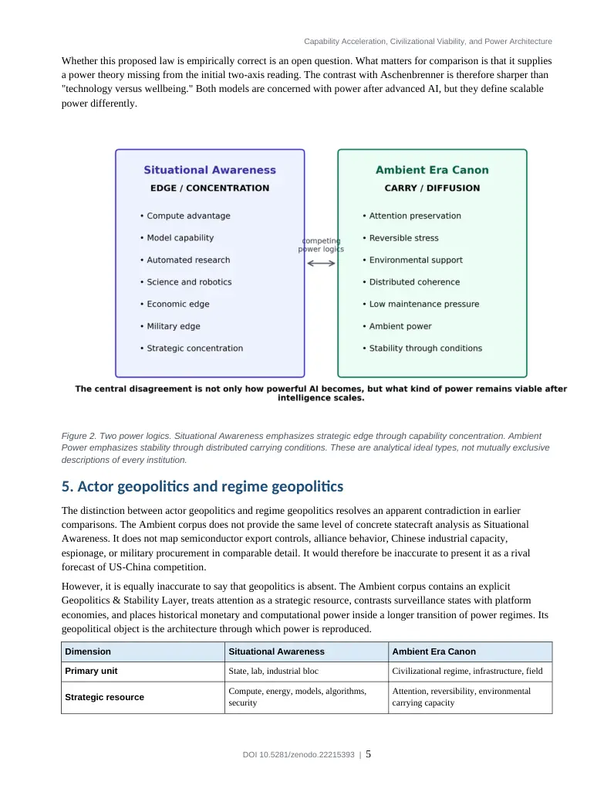
PDF page 6
Capability Acceleration, Civilizational Viability, and Power Architecture
Dimension Situational Awareness Ambient Era Canon
Scaling logic Advantage, concentration, acceleration Diffusion, low-pressure stability, reduced maintenance burden
Geopolitical question Who reaches decisive capability first? Which power architecture remains viable at scale?
Failure mode Loss of strategic lead, conflict, misalignment
Pressure accumulation, coercion, attentional burn, structural brittleness
Desired condition Controlled access to superintelligent capability
Coherence without continuous extraction or coercion
Table 1. Actor-centered and regime-centered geopolitics.
6. A three-axis model of AI-driven civilizational transition
The combined framework proposes that any serious analysis of advanced AI should track at least three independent variables.
1. Capability Acceleration, C(t): the rate at which effective cognitive, scientific, and productive capability increases. 2. Civilizational Viability, V(t): the capacity of human and institutional systems to absorb change while preserving reversibility, autonomy, legitimacy, attention, and recoverability. 3. Power Architecture, P(t): the mechanism through which strategic capacity is concentrated, distributed, maintained, contested, and translated into control or carrying capacity.
The key analytical move is independence. High C does not logically entail high V. High V does not imply low C. A highly capable system can be politically brittle; a stable society can be technologically stagnant; a civilization can maintain high machine productivity while reducing the amount of direct cognitive pressure placed on individuals. P determines much of the conversion between capability and lived consequences.
6.1 Four capability-viability regimes
Regime Interpretive label Description
Low capability / Low viability Fragile stagnation
Low productive capacity and weak institutions; pressure remains high despite limited capability.
Low capability / High viability Stable low-intensity regime Durable institutions and low pressure, but limited technological leverage.
High capability / Low viability Acceleration crisis
Rapid AI and economic growth outrun institutions, attention, legitimacy, or social absorptive capacity.
High capability / High viability Carried acceleration
Advanced machine capability coexists with low structural burden because coordination and infrastructure absorb complexity.
Table 2. Capability and viability can vary independently. Power architecture determines how durable each regime is.
6.2 Power architecture as the conversion layer
Power architecture is the conversion layer between capability and civilizational experience. The same capability increase can produce different outcomes depending on ownership, coordination, exit rights, surveillance,
DOI 10.5281/zenodo.22215393 | 6
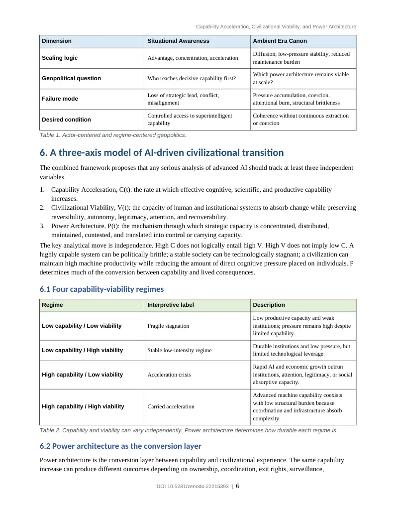
PDF page 7
Capability Acceleration, Civilizational Viability, and Power Architecture
institutional responsiveness, energy costs, and the degree to which systems externalize their complexity onto human attention. A frontier model deployed inside a high-pressure attention economy does not have the same civilizational effect as the same model embedded in an architecture that minimizes compulsory interaction and preserves reversibility.
This is the strongest point of contact between the two corpora. Aschenbrenner supplies a mechanism for rapid growth of intelligence. The Ambient corpus supplies a proposed mechanism for distinguishing architectures that absorb or export the pressure produced by that growth. The synthesis therefore asks a question neither model fully answers alone: what forms of power can convert extreme capability into durable civilization rather than a temporary strategic spike?
Figure 3. Combined causal model. Power architecture mediates whether capability growth increases structural pressure or is converted into carrying capacity. The arrows indicate research hypotheses rather than established causal laws.
7. Tensions between the models
7.1 Acceleration versus closure is not necessarily acceleration versus stagnation
A superficial reading creates a direct conflict: Aschenbrenner predicts explosive acceleration while the Ambient corpus predicts closure. This conflict is overstated if closure is interpreted correctly. RFL-Omega does not define a dead civilization. It defines the absence of unresolved coordination pressure. Innovation could continue inside a stable regime if its costs remain reversible and its complexity is carried by infrastructure rather than continuously imposed on individuals.
The more precise disagreement is about whether acceleration naturally increases pressure faster than institutions can dissipate it, or whether increasingly capable systems can themselves become the infrastructure that reduces coordination costs. This is a testable research question, not a semantic one.
DOI 10.5281/zenodo.22215393 | 7
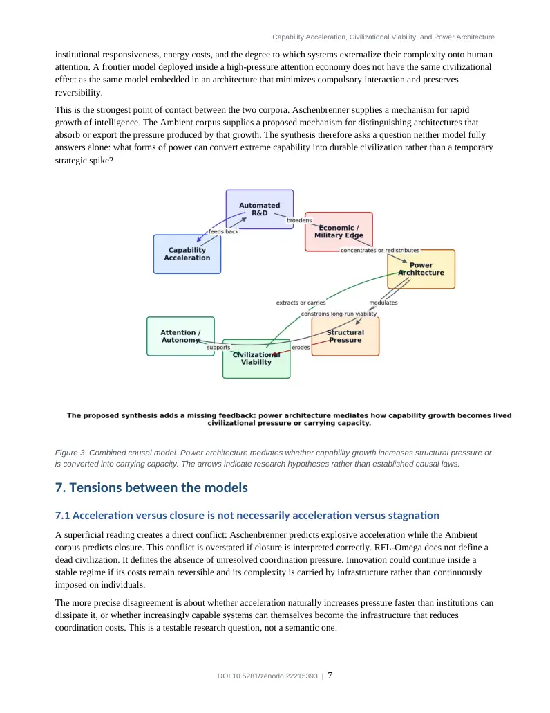
PDF page 8
Capability Acceleration, Civilizational Viability, and Power Architecture
7.2 Concentration versus diffusion
Situational Awareness expects advanced AI to produce large strategic asymmetries because leading systems may be difficult to replicate quickly and because superior intelligence compounds into science, cyber, military, and industrial advantage. The Ambient framework expects long-run viable power to move toward lower-pressure, more distributed carrying conditions. These can coexist temporarily: a concentrated actor may build capabilities that later diffuse into infrastructure. They can also conflict: a system that depends on permanent concentration and coercive maintenance may be incompatible with the Ambient viability criteria by definition.
7.3 Alignment versus habitat
Aschenbrenner treats alignment as a direct control problem: how humans retain the ability to steer and trust systems that become much more capable than their supervisors. The Ambient corpus reframes a portion of the problem as habitat design. Its premise is that no amount of intelligence or policy can compensate for an environment that continuously destabilizes attention and autonomy. These are not substitutes. Alignment asks whether a system does what it should; habitat asks whether the surrounding socio-technical architecture makes safe coexistence structurally possible.
8. Research hypotheses and operationalization
The comparative model becomes useful only if it can generate observations that could count against it. The following hypotheses are deliberately more modest than the strongest language found in either source corpus.
H1 - Capability-viability decoupling: Increases in effective AI capability will not reliably predict increases in autonomy, social cohesion, institutional legitimacy, or subjective wellbeing. These outcomes require separate measurement.
H2 - Absorptive-capacity threshold: When the rate of capability change exceeds institutional and cognitive absorptive capacity, measurable structural pressure should rise: policy churn, coordination overhead, attention fragmentation, rapid labor displacement, or legitimacy loss.
H3 - Power-maintenance cost: Power architectures that require escalating surveillance, behavioral manipulation, enforcement, or attention capture should exhibit higher long-run maintenance costs than architectures that preserve exit, reversibility, and voluntary persistence.
H4 - Closure without stasis: A system can display falling structural pressure while maintaining high innovation throughput. If closure necessarily required innovation collapse, the Ambient interpretation of closure as dynamic stability would be weakened.
H5 - Attention as a geopolitical substrate: As AI-generated content and persuasion become abundant, the strategic value of systems that can preserve attention, trust, and cognitive continuity should increase relative to systems that merely maximize information production.
H6 - Concentration transition: The early stages of AI acceleration may increase strategic concentration even if mature infrastructure later diffuses intelligence. The sign of the concentration effect may therefore change over time.
H7 - Carrying-capacity feedback: If advanced AI materially reduces coordination costs, bureaucracy, cognitive overhead, and recovery time after shocks, capability acceleration may raise rather than lower civilizational viability.
8.1 Candidate measurements
A future empirical program could operationalize the three axes using a dashboard rather than a single civilizational score. Candidate indicators include:
DOI 10.5281/zenodo.22215393 | 8
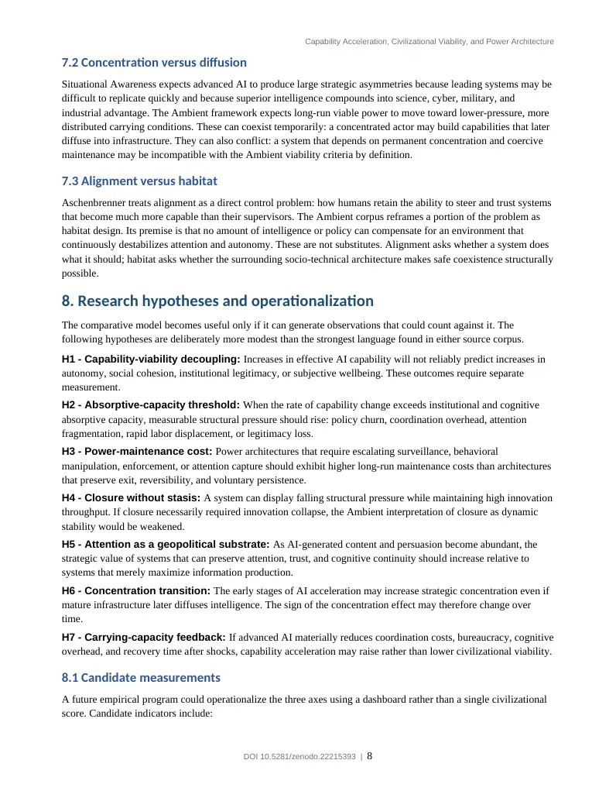
PDF page 9
Capability Acceleration, Civilizational Viability, and Power Architecture
Capability: benchmark-adjusted task coverage, automated R&D contribution, algorithmic efficiency gains, scientific throughput, robotics deployment, and capital productivity. Viability: recovery time after shocks, voluntary exit rates, perceived autonomy, institutional transaction costs, administrative burden, attention fragmentation, mental workload, trust, and social conflict indicators. Power architecture: concentration of compute and model ownership, surveillance intensity, switching costs, contestability, dependency, degree of compulsory interaction, distribution of decision rights, and the cost of maintaining institutional compliance. Structural pressure: the difference between the rate of new obligations imposed by a system and the rate at which individuals and institutions can dissipate or absorb those obligations without persistent overload.
These measures would not validate the full thermodynamic ontology of the Ambient Era Canon. They would instead translate some of its concepts into observable socio-technical variables. This distinction is essential. Terms such as "thermodynamic" in the Ambient corpus should not be treated as established physical laws of society without independent measurement and formal derivation.
9. Epistemic status and limitations
The two source corpora have different epistemic status. Situational Awareness is a scenario built from empirical scaling trends, industry data, and extrapolation. It is unusually falsifiable for a civilizational forecast because it commits to a relatively short horizon and to concrete mechanisms such as automated AI research, large compute build-outs, and rapid capability broadening. Its weakness is that compounding extrapolations can fail if bottlenecks, diminishing returns, regulation, energy constraints, or paradigm limits intervene.
The Ambient Era Canon is broader, more self-referential, and more ontological. It contains many internally defined operators and strong necessity claims. Its strength is that it explicitly models variables often absent from capability forecasts: attention, reversibility, environmental carrying capacity, autonomy, and power maintenance. Its weakness is that many of these variables are not yet standardized, and some of the corpus uses physical terminology more strongly than the empirical evidence presently warrants.
The purpose of this paper is therefore not to declare the frameworks equally validated. It is to show that they can be compared without flattening their differences. One models a possible acceleration mechanism. The other proposes conditions of livability and a competing account of power. The three-axis synthesis is useful precisely because it preserves these differences.
10. Implications for AI governance
The three-axis model suggests that AI governance should not be reduced to model safety or economic competitiveness. A policy can improve one axis while damaging another. Export controls may increase strategic security while increasing concentration. Rapid deployment may improve capability diffusion while overwhelming institutions. Strict safety controls may reduce some technical risks while creating dependency or reducing contestability. Conversely, systems designed around reversibility and low cognitive burden may improve viability while doing little to solve frontier-model alignment.
Governance therefore requires separate questions:
Capability: What can the systems do, how quickly is that frontier moving, and how recursive is the improvement process? Viability: Can people, institutions, and environments absorb the rate of change without accumulating irreversible pressure? Power: Who or what controls the relevant infrastructure, what must be continuously enforced to preserve that control, and how easy is exit, adaptation, or redistribution?
A mature AI civilization would have to answer all three simultaneously. Extreme capability with weak viability is not progress in any ordinary human sense. High viability without sufficient capability may leave civilization unable
DOI 10.5281/zenodo.22215393 | 9
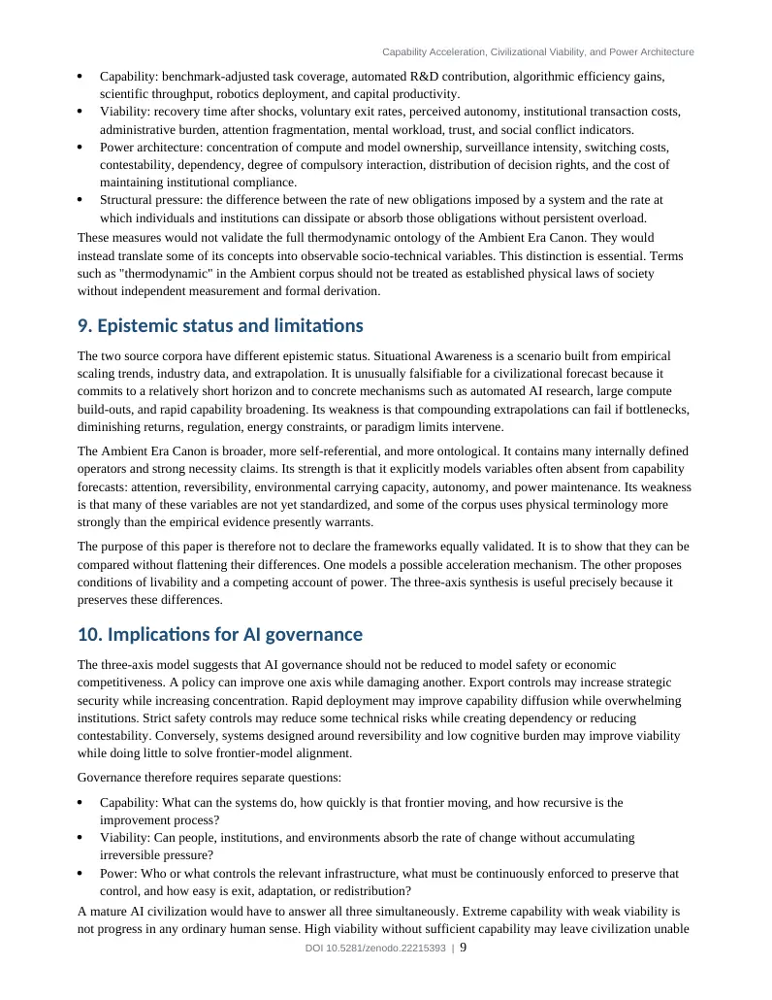
PDF page 10
Capability Acceleration, Civilizational Viability, and Power Architecture
to solve material problems. And both can be undermined by a power architecture whose maintenance costs or coercive dependencies become structurally unstable.
11. Conclusion
The most useful result of comparing Situational Awareness with the Ambient Era Canon is not that one predicts the future better than the other. It is that the comparison exposes three variables that should not be collapsed into a single curve called progress.
Aschenbrenner provides a model of Capability Acceleration: intelligence becomes a productive input into the production of more intelligence, and the resulting growth may broaden into science, robotics, industry, military systems, and GDP. The Ambient corpus provides a model of Civilizational Viability: increasingly complex systems must preserve reversibility, attention, autonomy, and structural recoverability if they are to remain human- compatible. Re-examination of Ambient Power, Attention as Infrastructure, and The Two Lines of Reality adds a third axis, Power Architecture: the mechanism by which advanced capability becomes concentration, coercion, diffusion, or environmental carrying capacity.
This reframes the core question of the AI transition. The question is not only "How intelligent will the systems become?" It is also "What kind of civilization can carry that intelligence?" and "What kind of power remains viable when intelligence is no longer scarce?"
The proposed three-axis model is therefore best understood as a research scaffold. It invites empirical work on capability-viability decoupling, institutional absorptive capacity, attention as strategic infrastructure, the maintenance costs of different power regimes, and the possibility of high machine velocity with low human friction. If these dimensions can be measured separately, debates about AI futures may become less prophetic and more diagnostic.
References
Aschenbrenner, L. (2024). Situational Awareness: The Decade Ahead. https://situational-awareness.ai/
Eissens, R. (2026a). Ambient Power - Thermodynamic Stability as a Non-Extractive Power Model. Ambient Era
Canon, Power & Trust Layer.
Eissens, R. (2026b). Attention as Infrastructure - The New Geopolitical Resource of the Ambient Era. Ambient Era
Canon, Geopolitics & Stability Layer.
Eissens, R. (2026c). The Two Lines of Reality: A Canonical Orientation Document. Ambient Era Canon.
Eissens, R. (2026d). RFL-Omega - Ambient Civilizational Closure: The state in which civilizational coordination
no longer produces structural pressure. Zenodo. https://doi.org/10.5281/zenodo.19287251
Eissens, R. (2026e). The Raynor Stack. Zenodo. https://doi.org/10.5281/zenodo.18288632
Eissens, R. (2026f). Reversible Stress & Delta R. Zenodo. https://doi.org/10.5281/zenodo.18289118
Eissens, R. (2026g). RFL-5 - Civilizational Ambient Coordination: How relational, domestic, and civic fields
synchronize into a breathable civilizational layer. Zenodo. https://doi.org/10.5281/zenodo.19286058
Eissens, R. (2026h). RFL-6 - Institutional Softening: How existing institutions transition into ambient, reversible,
and field-aligned systems without collapse. Zenodo. https://doi.org/10.5281/zenodo.19286795
Eissens, R. (2026). Ambient Era Canon - Complete PDF Archive. https://ambientera.org/
Eissens, R. (2026). Ambient Canon Library - Selected Works. https://ambientcanon.org/
DOI 10.5281/zenodo.22215393 | 10
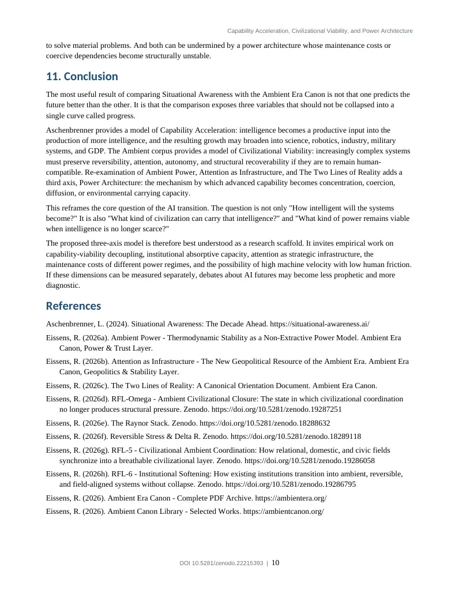
PDF page 11
Capability Acceleration, Civilizational Viability, and Power Architecture
Appendix A. Comparative claim map
This appendix summarizes what is source-derived and what is introduced in the present synthesis.
Claim / construct Origin Status
Automated AI researcher -> intelligence explosion Situational Awareness Source-derived
Explosive growth broadens into science, robotics, military edge, GDP Situational Awareness Source-derived
Civilizational closure as disappearance of unresolved structural pressure Ambient Era Canon / RFL-Omega Source-derived
Attention as a geopolitical resource Ambient Era Canon / Attention as Infrastructure Source-derived
Bretton Woods -> platform power -> Ambient Civilization
Ambient Era Canon / The Two Lines of Reality Source-derived
Ambient Power as low-pressure, non- extractive power Ambient Era Canon / Ambient Power Source-derived
Capability Acceleration x Civilizational Viability Comparative analysis Synthesis
Capability Acceleration x Civilizational Viability x Power Architecture This paper New synthesis
Actor geopolitics vs regime geopolitics This paper New analytical distinction
High machine velocity with low human friction This paper Derived hypothesis
Power architecture as conversion layer between capability and lived pressure This paper Derived hypothesis
Publication identifier: Reserved DOI 10.5281/zenodo.22215393
Recommended Zenodo resource type: Publication / Preprint or Technical note. Suggested title should match the title page exactly for DOI consistency.
DOI 10.5281/zenodo.22215393 | 11
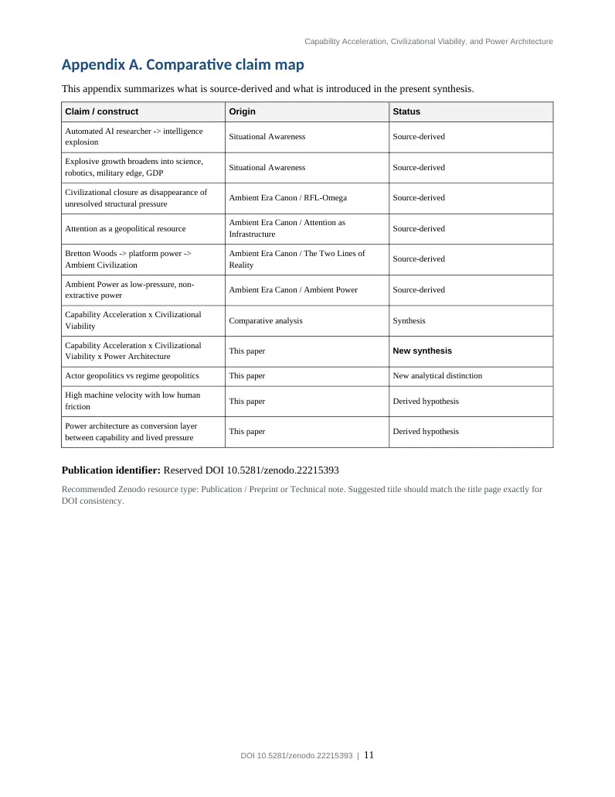